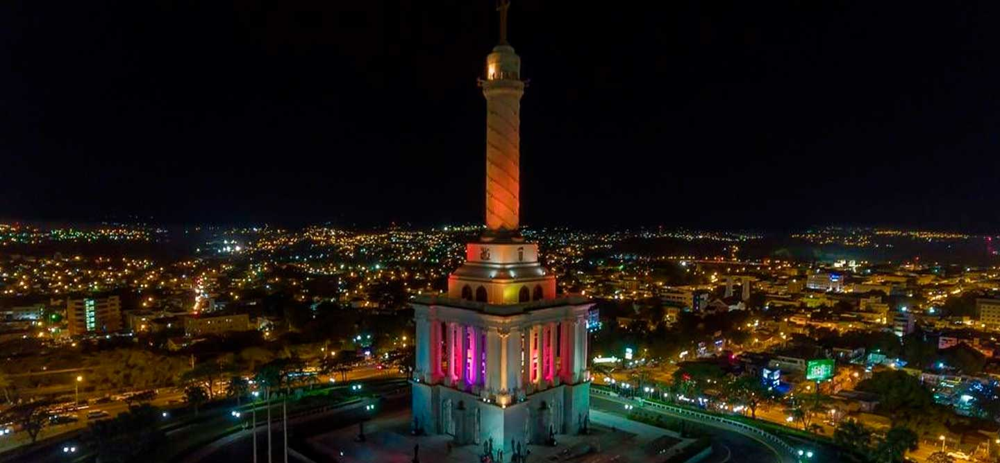

Santiago de los caballeros
“Primer Santiago de América”
Santiago de los Caballeros es la segunda mayor ciudad de la República Dominicana, capital de la provincia Santiago y principal centro metropolitano de la región norte o Cibao. Fue fundada en 1495 durante la primera ola de la colonización española del Nuevo Mundo como el “Primer Santiago de América”.
Está localizada en la región norcentral del país conocida como el Valle del Cibao, a unos 155 km al noroeste de Santo Domingo y a una altitud media de 178 msnm. Tiene una superficie total de 612 km2 Santiago de los Caballeros es uno de los principales centros económicos, financieros, políticos, sociales y culturales de la República Dominicana. Además es un importante centro industrial de ron, textiles, cigarrillos e industria del tabaco, todas se encuentran allí. Fábricas de calzado, artículos de cuero y de muebles son una parte importante de la vida económica de la región y del país.
Está localizada en la región norcentral del país conocida como el Valle del Cibao, a unos 155 km al noroeste de Santo Domingo y a una altitud media de 178 msnm. Tiene una superficie total de 612 km2 Santiago de los Caballeros es uno de los principales centros económicos, financieros, políticos, sociales y culturales de la República Dominicana. Además es un importante centro industrial de ron, textiles, cigarrillos e industria del tabaco, todas se encuentran allí. Fábricas de calzado, artículos de cuero y de muebles son una parte importante de la vida económica de la región y del país.
Está localizada en la región norcentral del país conocida como el Valle del Cibao, a unos 155 km al noroeste de Santo Domingo y a una altitud media de 178 msnm. Tiene una superficie total de 612 km2 Santiago de los Caballeros es uno de los principales centros económicos, financieros, políticos, sociales y culturales de la República Dominicana. Además es un importante centro industrial de ron, textiles, cigarrillos e industria del tabaco, todas se encuentran allí. Fábricas de calzado, artículos de cuero y de muebles son una parte importante de la vida económica de la región y del país.
Fue capital de la República Dominicana durante la Guerra de la Restauración (República Dominicana) (1863-1865). Santiago ha contado con importantes personalidades en el campo político, económico y social del país.